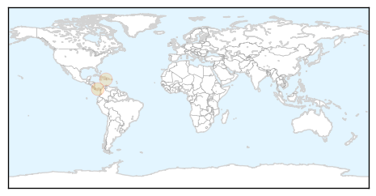

Influenza
30-Day Web Trend
0 alerts, 0 warnings

30-Day Twitter Trend
0 alerts, 0 warnings

Article Locations

Article Confidences

Top Articles:
- 0.989
- Oklahoma's flu death toll rises to 98
- 0.988
- Flu deaths increase by 8 in Hong Kong
- 0.984
- State monitoring for Avian Influenza
- 0.981
- The Portland Press Herald / Maine Sunday Telegram
- 0.980
- Bird Flu Spreads in China and the U.S.
- 0.980
- Bird flu could become 'pandemic' threat to humans
- 0.976
- Spreading message of getting flu jab
- 0.974
- Flu Virus in China Has Pandemic Potential, Scientists Say
- 0.972
- Chinese Bird Flu Could Potentially Become a Pandemic
- 0.969
- Will Egypt unleash another flu pandemic?
- 0.958
- Bird flu study 'sounds the alarm' on strain’s pandemic potential
- 0.949
- Record winter mortality rate in France blamed on flu
- 0.942
- Bird flu spreads across China, posing threat to people - Cleveland 19 News
- 0.926
- Swine Flu Outbreak in India Raises Concern
- 0.900
- Flu pandemic begins
- 0.887
- Bird Flu Outbreak In Arkansas
- 0.882
- With student absences soaring due to illness, Eisenhower calls off classes Friday
- 0.751
- March 12, 2015 Archives
- 0.751
- March 12, 2015 Archives
- 0.751
- March 11, 2015 Archives
- 0.751
- March 11, 2015 Archives
- 0.751
- March 11, 2015 Archives
- 0.751
- March 11, 2015 Archives
- 0.720
- News in Brief: Week of March 9-13
- 0.702
- Bird Flu Found in Midwest
- 0.702
- KDA on lookout for strains of bird flu in poultry
- 0.681
- Avian influenza restrictions on B.C. poultry farms lifted by CFIA
- 0.657
- Missouri turkeys are infected with Avian Influenza Virus
- 0.643
- Bird flu discovered in Arkansas turkeys: USDA officials report
- 0.592
- USAID helps Vietnam prevent emerging contagious diseases
- 0.545
- Deadly Bird Flu confirmed at Second Turkey Farm in Missouri
- 0.543
- Bird Flu Scare For Tyson Foods, Inc. (TSN)
Top Tweets:
-
No tweets found for Mar 12, 2015
Mold/Fungal
30-Day Web Trend
30-Day Twitter Trend
0 alerts, 0 warnings

Article Locations
Article Confidences

Top Articles:
Top Tweets:
-
No tweets found for Mar 12, 2015